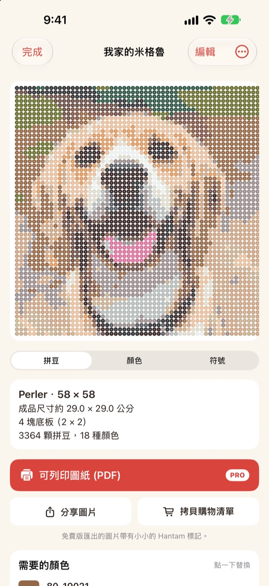
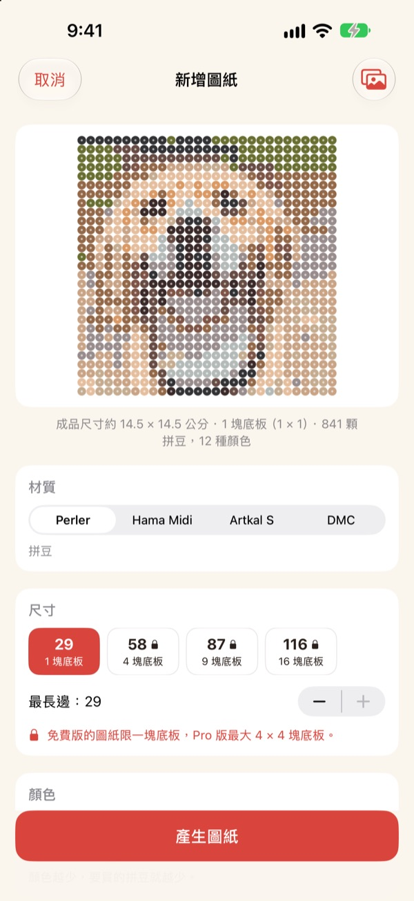
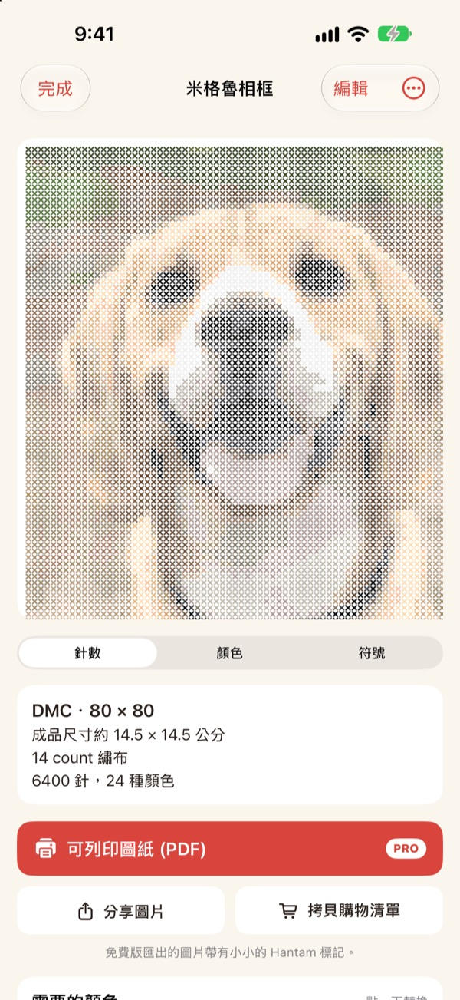
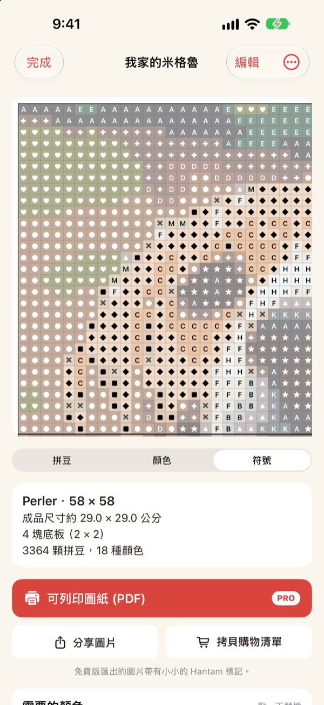
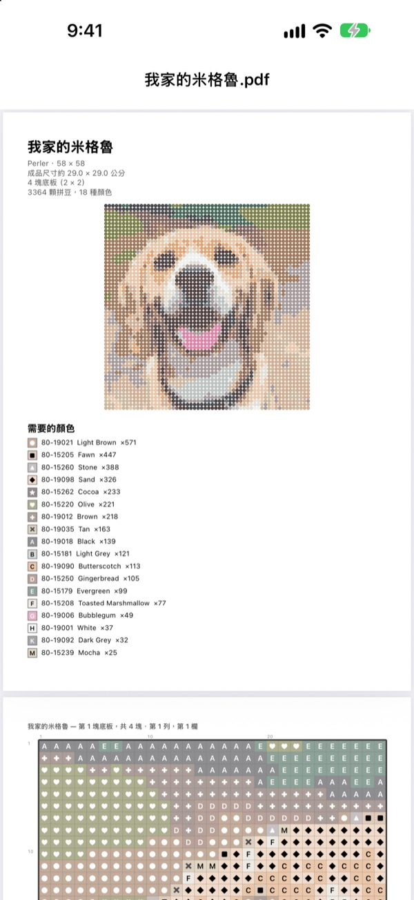

一張照片
就是一份圖紙
選一張寵物、自己或喜歡的角色的照片。Hantam 會用真正買得到的顏色，把它變成拼豆或十字繡圖紙。
一塊拼板以內的圖紙免費。照片不會離開你的 iPhone。

用照片試試看
和 App 用的是同一種配色方式，顏色來自真實的 Perler 色卡。可以調整尺寸和顏色數，也能換成你自己的照片。
做圖紙不難，難的是對上真實的豆子顏色
用一般修圖 App 把照片像素化，做出來的顏色常常沒有任何豆子或繡線對得上。你得猜每一格該用哪一罐豆子，再一色一色算要買多少。Hantam 只從真正有在賣的顏色裡挑，還會精準告訴你需要多少。
真實顏色，真實色號
可以選 Perler、Hama Midi、Artkal S 拼豆，或 DMC 繡線。每一格都會對應到該品牌真正販售的顏色，並標上色號。
尺寸和顏色數也能自己決定。大圖紙會依 29 × 29 拼板分塊。

十字繡也可以
選 DMC 繡線，同一張照片就變成十字繡圖紙。選擇 11、14、16 或 18 目的十字繡布，就能看到完成尺寸和每種顏色需要的針數。

要買什麼一眼就懂
切換到符號圖紙，一格一格跟著做。拼板邊界或每 10 格都有粗線。看清每種顏色需要幾顆豆子，點 拷貝購物清單 一次帶走。
點一下格子就能修改，也能把某個顏色整個換成另一個顏色。

印出來就能開工
有 Pro 就能匯出 可列印圖紙 (PDF)：第一頁是顏色清單，後面是依拼板一塊一塊分好的符號圖紙。

三個步驟做出圖紙
- 1
選擇照片
寵物、人像、標誌、角色都可以。主角清楚的照片效果最好。
- 2
選拼豆或繡線
決定品牌、尺寸和顏色數。
- 3
開始製作
看著螢幕上的圖紙做，或用 Pro 列印出來。
材料與尺寸
- Perler · Hama Midi · Artkal S
- 拼豆，29 × 29 拼板，每顆約 5 mm
- DMC
- 十字繡線，可選 11、14、16、18 目十字繡布
- 免費
- 拼豆最多 1 塊拼板（29 格），繡線長邊最多 40 格
- Pro
- 拼豆最多 4 × 4 塊拼板（116 格），繡線最多 200 格
- 顏色數
- 每份圖紙 2 到 50 色
Perler、Hama、Artkal 與 DMC 是各自所有者的商標，Hantam 與它們沒有關聯。螢幕上的顏色可能和實物略有差異。
免費開始，大圖紙和列印用 Pro
免費
- 1 塊拼板（十字繡 40 格）以內的圖紙
- Perler、Hama、Artkal、DMC 所有品牌
- 每色用量、購物清單、換色
- 最多保存 3 份圖紙
- 分享帶有小 Hantam 標記的圖片
Hantam Pro
- 可列印的 PDF 圖紙
- 最多 4 × 4 塊拼板（十字繡 200 格）
- 無限保存圖紙
- 沒有標記的圖片
- 所有像素畫工具
按月或按年訂閱，或一次付清終身使用
也可以在 App 裡把 Pro 當作禮物送給朋友。
常見問題
照片會被上傳嗎？
不會。照片和圖紙只在你的 iPhone 裡處理和儲存。
螢幕上的顏色和我的豆子有點不一樣。
螢幕顯示的顏色和塑膠、繡線實物會有差異。在顏色清單裡點一下顏色，就能換成同品牌中更接近的顏色。
圖紙最大能做多大？
免費版是 1 塊 29 × 29 拼板，十字繡長邊 40 格。Pro 最多 4 × 4 塊拼板（116 格），十字繡 200 格。
什麼樣的照片效果好？
主角只有一個、背景單純的照片。顏色越少圖紙越乾淨，看起來太雜的話，試著減少顏色數。
還能畫像素畫嗎？
可以。照片像素化、跟著 110 個範例畫、逐格動畫都還在。所有像素畫工具都包含在 Pro 裡。
要怎麼恢復購買？
在 App 的設定裡點 恢復購買項目。請使用購買 Pro 時的同一個 Apple 帳號。
要怎麼取消訂閱？
前往 iPhone 設定 › 你的名字 › 訂閱，選擇 Hantam 取消。終身版只付一次，不會續訂。
要怎麼回報問題或提出建議？
最快的方式是 App 設定裡的意見回饋。也可以寄信到下方信箱，或在 Instagram 私訊 @lee25_ios。
問題、錯誤回報和建議，都歡迎寄到 leeo@kakao.com。